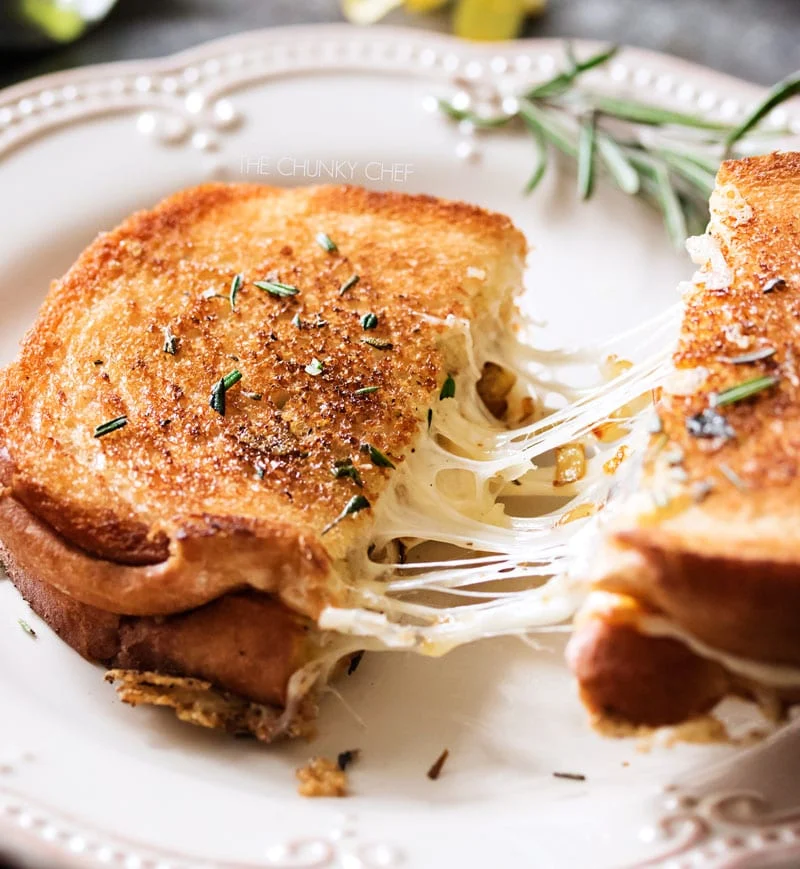

The Ultimate Grilled Cheese Sandwich

Description:
- This gourmet grilled cheese is loaded with herbed caramelized onions,
gooey Gruyere and white cheddar cheeses, and is cooked in a savory
rosemary butter!
Ingredients:
- 8 slices good quality bread
- Mayonaisse
- 12 oz Gruyere cheese
- 6 oz White cheddar cheese
- 4 slices thin Meunster cheese
- 2 yellow onions
- 1 tsp fresh thyme
- 2 tsp fresh rosemary
- 1 tsp brown sugar
- salt & pepper to taste
- 3 tbsp butter
- 1 tbsp olive oil
Steps to Make:
- Add 1-1/2 Tbsp butter and olive oil to a skillet and heat
over MED-LOW heat. Add diced onions, salt,
pepper, fresh thyme and 1 tsp of fresh rosemary to the hot
skillet and saute, stirring often, until onions are soft
and starting to brown, about 10 minutes.
- Stir brown sugar into the onions and cook another minute.
- Transfer onions to a plate.
- Spread one side of two pieces of bread with a little bit
of mayonnaise.
- To the same skillet, add remaining butter and rosemary,
and heat over MED heat. Swirl to coat
the bottom of the skillet with the melted butter.
- Add both pieces of bread, mayonnaise side down, and cook
until bread is golden brown and crunchy, about 2-3 minutes.
- As soon as you add the bread to the skillet, add a bit of
cheese to the top of each piece of bread. Once it starts
to melt a little, sprinkle a couple tablespoons of the
caramelized onions over the top of one of the pieces of
bread.
- When the bread is good and golden brown, sandwich the pieces
of bread together and cook on LOW until
cheese is fully melted.
- Transfer to a plate, repeat with remaining slices of bread and
ingredients.
Enjoy!